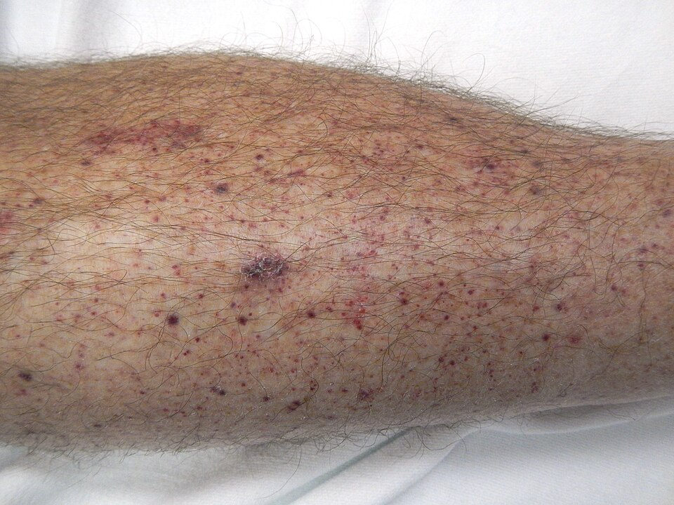
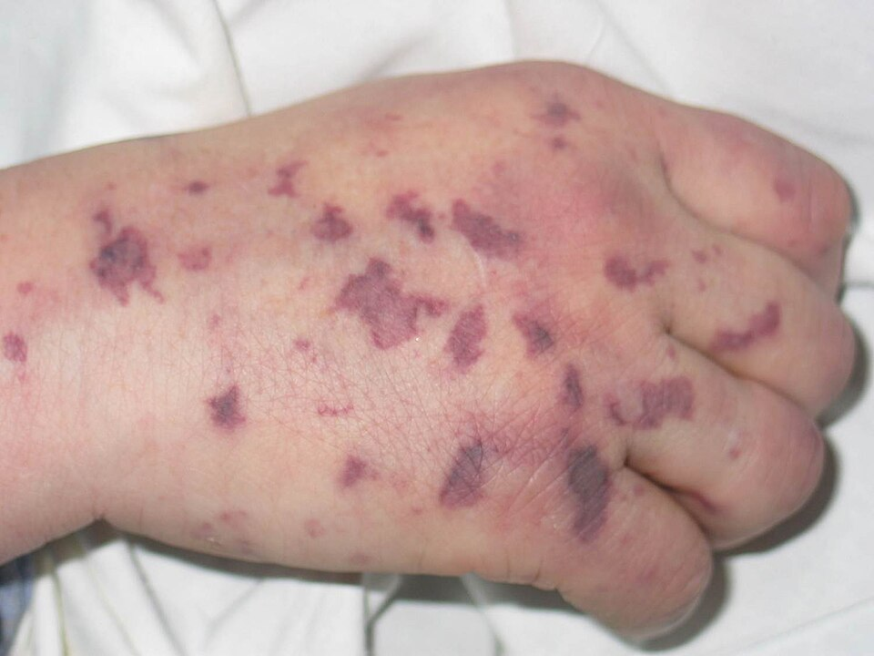
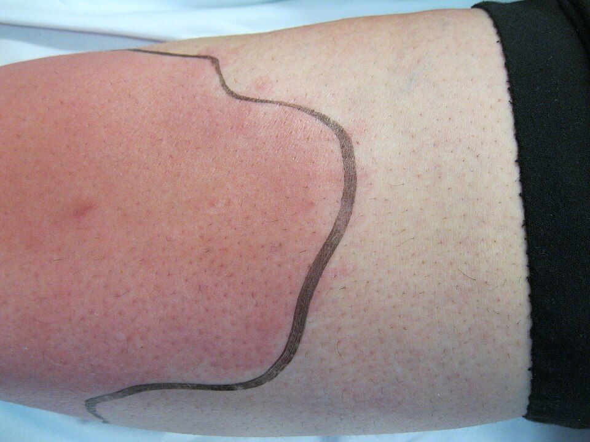
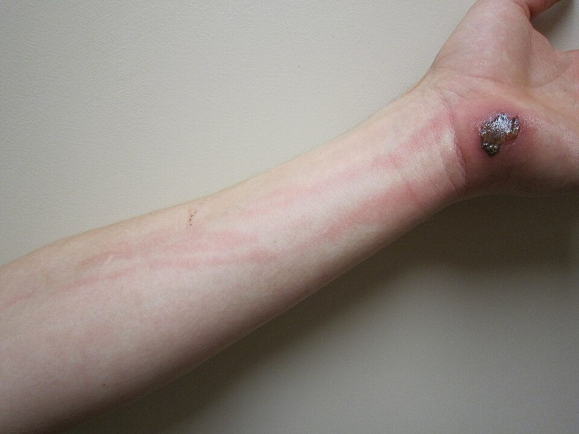
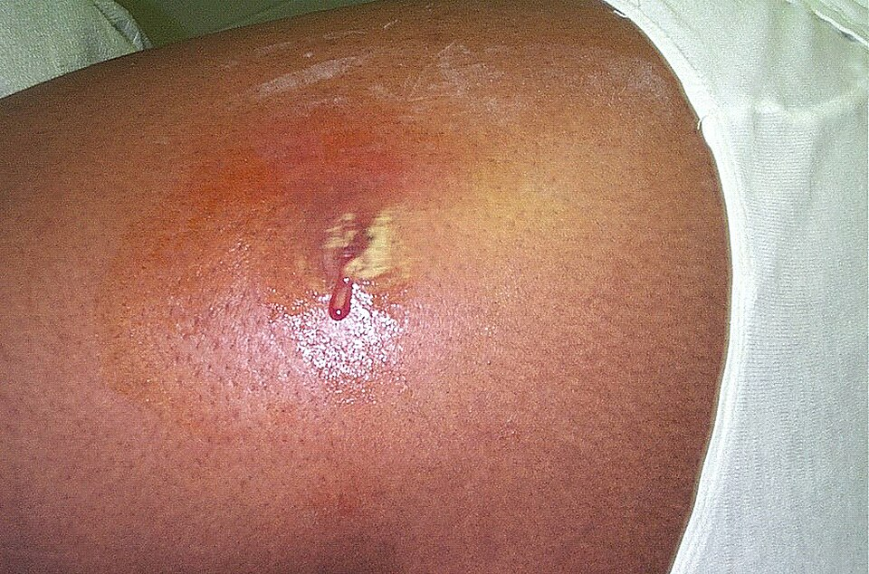

Fever in the Adult Patient
Most fevers in the ED are infections, and most are found with a history and exam alone. The work is to spot the sick patient early and to remember that the old and the chronically ill hide serious infection.
The 3 killers
- Septic shock
- CNS infection: meningitis. Look for the rash of meningococcemia.
- Respiratory failure: pneumonia, or a neck infection closing the airway
Your first 3 moves
- Unstable? Confusion, respiratory distress or a low BP → airway and O2, monitor, IV fluids and broad-spectrum antimicrobials now, before the workup is done.
- Over 41 °C → cool first. It's hyperthermia, and antipyretics won't fix it.
- Stable → find the source with a history and a head-to-toe exam. Over 65, lungs, urine and skin cause > 80%.
The 2 tests that matter
Trap The WBC count can be normal in a life-threatening infection and high without one. Don't let it rule anything in or out.
Who gets admitted
Older adults hide it. Confusion, falls or not eating may be the only sign, often with no fever. 70–90% are admitted and 7–9% die within a month.
1 Differentials
The things that kill are shock (usually septic), respiratory failure and CNS infection. Non-infectious causes exist but rarely present with fever as the main complaint.
Infectious causes
- Systemic Sepsis or septic shock, meningococcemia
- Neuro Meningitis, cavernous sinus thrombosis
- Resp Bacterial pneumonia with respiratory failure
- GI Peritonitis
- Resp Bacterial pneumonia; peritonsillar or retropharyngeal abscess, epiglottitis (airway)
- Cardiac Endocarditis, pericarditis
- GI Appendicitis, cholecystitis, diverticulitis, intra-abdominal abscess
- GU Pyelonephritis, PIDPelvic inflammatory disease: ascending infection of the uterus, tubes and ovaries., TOATubo-ovarian abscess: a walled-off collection that complicates PID.
- Neuro Encephalitis, brain abscess
- Skin Cellulitis, soft-tissue abscess, infected pressure ulcer
- Resp Otitis media, sinusitis, pharyngitis, bronchitis, influenza, TB
- GI Colitis, enteritis
- GU Cystitis, epididymitis, prostatitis
Non-infectious causes
- MI; PE or pulmonary infarction
- Intracranial hemorrhage; stroke
- NMSNeuroleptic malignant syndrome: fever, rigidity, altered mental status and autonomic instability after an antipsychotic.; thyroid storm; acute adrenal insufficiency
- Transfusion reaction; pulmonary edema
- CHF; dehydration; recent seizure
- Sickle cell disease; transplant rejection
- Pancreatitis; DVT
- Drug fever; malignancy
- Gout; sarcoidosis; Crohn disease
- Post-myocardiotomy syndrome
Who is in front of you changes the list
| Patient | What's usually going on |
|---|---|
| Young, otherwise healthy | Self-limited viral illness or a focal bacterial infection. Mortality is under 1%. Hunt for the rare killer: meningitis, meningococcemia, systemic MRSA, septic or toxic shock, peritonitis. |
| Over 65, chronic disease, immunosuppressed | Mostly bacterial: respiratory, urinary, skin and soft tissue (> 80%). Also consider meningitis, cholecystitis, appendicitis and diverticulitis, which present atypically. Older adults have 5–10× the UTI risk and 15–20× the appendicitis risk, and even influenza can kill them. |
| Fever or hyperthermia? | Mechanism → what fixes it |
|---|---|
| Fever | Pyrogens (IL-1, IL-6, TNF, interferon) make the hypothalamus produce PGE2, which raises the set point. Antipyretics work because COX inhibitors block PGE2. Normal is 36.0–37.8 °C, and ≥ 38.3 °C is agreed by nearly everyone to be fever (the CDC uses > 37.8, others 38.0). |
| Hyperthermia | The set point is normal, but the body can't get rid of heat (heat illness, drugs). Most temperatures > 41 °C are hyperthermia. Antipyretics don't fix it: cool them. |
2 History
Characterize the fever, find the source, then work out how vulnerable the host is. In older patients, family and caregivers often give the most useful history.
| Ask about | Why it matters |
|---|---|
| The fever itself | |
| Onset, duration, how high | Sets the severity and the pace of the workup. |
| Timing and pattern | Some patterns point to a specific disease (e.g. periodic fevers in malaria). |
| Chills, then sweats | Chills come while the set point is rising, so a reading taken early can still be normal. Recheck. Sweating means the set point is falling back. |
| Antipyretics taken, and when | Can hide the fever at triage. |
| Where is the source? | |
| Cough, sputum, shortness of breath | Pneumonia. Older patients often have neither cough nor dyspnea. |
| Dysuria, frequency, flank pain | UTI or pyelonephritis. Often completely absent in older adults. |
| Severe sore throat, muffled voice | A “hot potato” voice suggests epiglottitis or a deep neck abscess, which threatens the airway. |
| Headache, neck stiffness, confusion | Meningitis or encephalitis. |
| Abdominal pain, vomiting, diarrhea | An abdominal source. |
| Lower abdominal pain, vaginal discharge, dyspareunia | PID or TOA, so do a pelvic exam. |
| Skin redness, wounds, boils; hot joints | Cellulitis or a soft-tissue abscess; joint inflammation. |
| Who is the host? | |
| Age > 65, diabetes, renal failure, chronic disease | High risk, with a low threshold to admit. |
| Cancer with recent chemo or radiation | Suspect neutropenia or another immunocompromised state. |
| Prosthetic valve, line, port or other device | Endocarditis or device infection. Can be critical to the diagnosis. |
| Recent surgery, admission or treatment | Nosocomial organisms. |
| Baseline mental and physical function | Ask someone who knows them. A subtle change may be the only sign. |
| Exposures and drugs | |
| Travel, recent or remote | Exotic infections (e.g. malaria). |
| MRSA risk | Skin infections in household or close contacts; military, prison, contact sports. |
| Full medication list | Drug fever. A new antipsychotic raises NMS. Beta blockers blunt the heart rate response. |
| Older adults: the atypical presentation Red flag | |
| Confusion, falls, trouble walking, new incontinence, not eating, lethargy, weakness | May be the only sign of pneumonia or UTI. 75% of functional decline in nursing-home residents is infection. |
3 Physical Exam
Vitals first, then a head-to-toe hunt for the source. Let the patient's symptoms point you, but in the old and the immunosuppressed check everywhere, because the exam can be quiet.
| Check | Look for → think |
|---|---|
| Vitals | |
| Temperature: how you take it | Rectal (or a bladder probe if there's a Foley) is the most accurate in the ED. Axillary and tympanic are unreliable. Oral readings are skewed by hot or cold drinks, smoking and hyperventilation. Rectal runs about 0.7–1.0 °C above oral. |
| Temperature: no fever? | The old, the very young and the chronically ill may not mount one. Temperatures fluctuate, so recheck. |
| Heart rate | Expect about +10/min for every 0.55 °C (1 °F). A relative bradycardia suggests a beta blocker, factitious or drug fever, typhoid, brucellosis or leptospirosis. A frank bradycardia suggests rheumatic fever, Lyme disease, viral myocarditis or endocarditis. |
| Respiratory rate | Expect about +2–4/min per °C. More than that means a respiratory infection or the acidosis of shock. |
| Blood pressure, mental status | Hypotension and marked tachypnea predict a severe, complicated course. |
| Head to toe | |
| Ears, sinuses, throat, teeth | Otitis, sinusitis, pharyngitis, dental infection, peritonsillar or retropharyngeal abscess. Watch for the muffled voice. |
| Fundi | Rarely positive: disseminated candidiasis, miliary TB, endocarditis, toxoplasmosis, leukemia. |
| Neck | Lymph nodes, masses, a goitre or thyroid mass. Nuchal rigidity is useful if present, but it is often absent in the very young or debilitated even with meningitis. Cervical arthritis and Parkinson disease cause stiffness at baseline. |
| Lungs | Localized crackles or rhonchi, a rub, dullness. COPD, CHF and poor effort hide pneumonia in older adults. |
| Heart | A pericardial rub (pericarditis) or a new murmur (endocarditis). |
| Abdomen | Can be deceptively benign in older adults, people with diabetes and anyone on steroids or immunosuppressants. |
| Rectal, when indicated | Enteritis, perirectal abscess, prostatitis. |
| Genitals and pelvis | Bartholin abscess, urethral or vaginal discharge, epididymitis or orchitis. Pelvic exam for PID or TOA. |
| Skin and extremities | Rash, petechiae, hot joints, cellulitis or abscess. Bone tenderness without trauma (long bones, spine) suggests osteomyelitis or tumour. In the bedridden, look for pressure ulcers. |
What the skin can tell you

Petechiae: pinpoint, flat and non-blanching. This leg is from ITP, but early meningococcal rash can look just like it, so the story and the vitals decide. James Heilman, MD, CC BY-SA 4.0.
Meningococcemia: star-shaped hemorrhagic purpura on the back of the hand. Larger than 2 mm and non-blanching. Глей А. І. & Шкурба А. В., public domain.Fever + a non-blanching rash = meningococcal disease until proven otherwise. NICE's red flags are a non-blanching rash with lesions > 2 mm (purpura), or a non-blanching rash that spreads fast.
- No rash doesn't rule it out, and a rash can start out blanching and turn non-blanching.
- Check the whole body, including the conjunctivae.
- Suspected meningococcal disease: antibiotics within 1 hour of arrival.
NICE NG240, Meningitis (bacterial) and meningococcal disease, 2024: recs 1.1.9–1.1.12, table 3, rec 1.5.1.

Cellulitis: flat, spreading redness with no pocket of pus. The pen line marks the edge so the next person can tell whether it's spreading. John Campbell, CC0.
Cellulitis with lymphangitis: after a wrist abrasion, a red streak tracks up the forearm along the lymphatics. James Heilman, MD, CC BY-SA 3.0.
Abscess: a tense, raised collection on the hip that has started to drain pus. This one was MRSA. CDC / B. Coignard & J. Hageman, public domain.| Cellulitis vs abscess | |
|---|---|
| Cellulitis | Flat, spreading, poorly defined redness and warmth. Antibiotics that cover streptococci. Cultures aren't routinely needed. |
| Abscess | A tender, fluctuant lump that may point or drain. Incision and drainage is the main treatment. Culture the pus when the patient is at risk of MRSA (Rosen). |
Beyond Rosen Treatment lines from the IDSA skin and soft-tissue guideline: Stevens DL et al., Clin Infect Dis 2014;59:e10–52.
4 Investigations
Let the history and exam choose the tests. The two that matter most, especially in older adults, are the urinalysis and the chest x-ray.
| Test | When · what it tells you |
|---|---|
| First line | |
| Urinalysis | Highly accurate for UTI, especially in men, though not foolproof. |
| Chest x-ray | Pneumonia. Harder to read with COPD, CHF, dehydration or chronic lung disease. |
| ABG or VBG | Picks out the critically ill (acidosis) who need treatment now. |
| Tests that mislead | |
| WBC count Trap | Neither sensitive nor specific. It can be high without serious infection and normal in life-threatening infection. Don't let it rule anything in or out. |
| ESR and other inflammatory markers | Patchy sensitivity and poor specificity. |
| Cultures | |
| Blood and urine cultures | For older or chronically ill patients with acute fever and no obvious source, and for any unexplained severe febrile illness. The results don't change what you do in the ED. |
| Outpatient blood cultures | Almost never. A patient sick enough to need blood cultures needs admission and empiric antibiotics. |
| Abscess culture, Gram stain | Culture skin and soft-tissue abscesses when the patient is at risk of MRSA. |
| Indwelling line or port | Culture it, and it may need to come out. |
| Targeted | |
| Lumbar puncture | Altered mental status, headache, meningismus, or neurologic symptoms that an infection outside the CNS doesn't explain. |
| CT head before the LP | Focal neurologic findings, or a suspected embolic source such as endocarditis, to exclude a mass or abscess. Never delay antibiotics for the CT or the LP in suspected meningitis. |
| CT abdomen | Appendicitis, diverticulitis, cholecystitis, obstruction, perforation, abscess. Plain abdominal films are rarely useful. |
| Ultrasound | Cholecystitis. |
| Thyroid function tests | When thyroid storm is suspected. |
| Still no source | Think broader: autoimmune (ANA, RF, ESR), malignancy, TB (PPD), and CT of the abdomen and pelvis. |
5 Decision Rules
The approach as a flowchart
- Infectious
- Autoimmune: ANA, RF, ESR
- Malignancy
- Miscellaneous
Rosen's Figures 9.1 (unstable) and 9.2 (stable), redrawn as one chart.
- TTemperature > 38 °C or < 36 °C
- HRHeart rate > 90/min
- RRRespiratory rate > 20/min, or PaCO2 < 32 mmHg
- WBC> 12,000 or < 4,000/µL, or > 10% bands
Sepsis-3 (2016) replaced the SIRS definition. Sepsis is now life-threatening organ dysfunction caused by a dysregulated host response to infection, meaning an acute rise of ≥ 2 SOFA points. Septic shock means needing vasopressors to keep the MAP ≥ 65 with a lactate > 2 mmol/L despite adequate fluids.
qSOFA is two or more of RR ≥ 22, altered mentation (GCS < 15) and SBP ≤ 100. It predicts death and prolonged ICU stay in suspected infection, but it is not part of the definition.
The 2021 Surviving Sepsis guideline recommends against using qSOFA alone as a screening tool in place of SIRS, NEWS or MEWS, because it is more specific but less sensitive. It also sets antibiotic timing: within 1 h for possible septic shock or probable sepsis. For possible sepsis without shock, do a rapid workup and give them within 3 h if infection is still likely.
Singer M et al., JAMA 2016;315:801–10 · Evans L et al., Intensive Care Med 2021;47:1181–247 (Recs 2, 12–14).
Sustained temperatures above 41 °C are rare and can damage neurons. Most are hyperthermia (e.g. heat stroke). Cool before anything else: mist with tepid water and use fans, cool-water immersion or cooling blankets, along with antipyretics.
- Serious signs or symptoms: choose by the likely source and the host. Neutropenia and end-stage renal disease change the choice.
- Severely ill with no clear source: broad-spectrum coverage of gram-positive and gram-negative aerobes and anaerobes. If immunocompromised, often add antivirals and antifungals.
- Neutropenic fever: prompt broad-spectrum antibiotics.
- Head and neck soft-tissue infection can obstruct the airway, so secure it early.
- Once a specific infection is found, narrow to it.
Disposition
- Localized bacterial infection that oral antibiotics can treat
- Young, healthy, systemic viral illness, after ED IV fluids, antipyretics and antiemetics if they're vomiting or not drinking
- Older or chronically ill (diabetes, chronic renal failure) with no clear source
- Suspected MRSA infection with fever or systemic symptoms (ward or obs unit)
- Unexplained severe febrile illness: blood and urine cultures plus broad-spectrum antibiotics
- Neutropenic fever
- Unstable vitals or a life-threatening infection: ICU if not stabilized in the ED
6 Cases
Two published cases, one decision at a time. Answer before you read on: the explanation opens only after you pick.
Fever, a spreading rash and a BP of 78
A 26-year-old man is transferred from another ED for a higher level of care. He has never had a meningococcal vaccine and has an alcohol use disorder. A week ago he developed fever, chills and muscle aches. Since then he has had neck stiffness, nausea and vomiting, and a rash that is spreading fast. He also mentions a recent COVID-19 exposure.
Skin: a violet, net-like rash of purpura and petechiae covers both arms and legs, the abdomen and the chest.
What do you do first?
Resuscitate and give antibiotics now. A BP of 78/53 and a HR of 185 put him on the unstable side of the flowchart: resuscitation and broad-spectrum antimicrobials come before the workup is finished.
Fever, a spreading non-blanching rash and shock is meningococcal septicemia until proven otherwise. CT and LP can come later, but they never delay the antibiotics. Blood cultures are fine if they take minutes, not if they take an hour. Beyond Rosen NICE: antibiotics within 1 hour of arrival.
| Test | Result | Flag | Reference |
|---|---|---|---|
| White cell count | 2.06 ×103/µL | L | 3.98–9.57 |
| Hemoglobin | 10.6 g/dL | L | 13.0–17.0 |
| Platelets | 55 ×103/µL | L | 150–400 |
| PT | 25.9 s | H | 11.9–15.0 |
| PTT | 52.5 s | H | 23.0–35.4 |
| INR | 2.3 | H | 0.9–1.2 |
| Fibrinogen | 159 mg/dL | L | 204–488 |
| D-dimer | > 20 µg/mL FEU | H | ≤ 0.50 |
| Creatinine | 1.6 mg/dL | H | 0.72–1.25 |
Using the SIRS criteria, how many can you confirm right now?
Two. SIRS needs a temperature above 38 °C, so 38.0 doesn't count. A HR of 185 (> 90) counts, and so does a WBC of 2.06, because below 4 counts as well as above 12. His RR wasn't reported. Two criteria plus an infection is sepsis by Rosen's definition.
Notice that his white count was low, not high. A normal or low WBC never reassures you.
Look at the platelets, PT, PTT, fibrinogen and D-dimer together.
What pattern do they make?
DIC. Everything is being used up at once: platelets down, PT and PTT long, fibrinogen low, D-dimer through the roof. Clots in small skin vessels, with bleeding around them, are what make purpura fulminans.
ITP lowers only the platelets. Warfarin lengthens the PT but doesn't use up platelets and fibrinogen. Dilution doesn't push a D-dimer past 20.
He went to the ICU on vancomycin and ceftriaxone (later piperacillin-tazobactam), with stress-dose steroids and vasopressors. He also tested positive for COVID-19. On day 2 he had a PEA arrest and was resuscitated. Blood cultures grew a beta-lactamase-producing N. meningitidis, so he was switched to meropenem. The DIC needed platelets, plasma and cryoprecipitate. His kidneys and liver failed, and his fingers and feet became necrotic.
His roommates ask whether they need anything. What do you tell them?
Prophylaxis now. Close contacts of invasive meningococcal disease get chemoprophylaxis promptly. In this case it was given on the day he was admitted, and unvaccinated contacts were also vaccinated. Waiting for symptoms is too late, because the disease moves in hours.
Bilateral below-knee and finger amputations were recommended. His prolonged critical illness, recurring fevers and agitation kept him on the ventilator. His family chose comfort care, and he died on day 27.
The rash and the blood pressure made the diagnosis and the plan on their own. No test was needed before acting.
He arrived a week into his illness, already purpuric. Purpura fulminans kills more than half of the people who get it. The window to change the outcome is the early hours, while the rash is still a few petechiae.
Source: Malinosky HR, Santiago K. Beyond the rash: the devastating course of meningococcal purpura fulminans in an unvaccinated young adult. Cureus 2025;17(7):e87617. doi:10.7759/cureus.87617 (CC BY 4.0). The case is theirs; the questions and the framing are mine.
Two “mechanical” falls
A woman in her late 60s with type 2 diabetes falls down four flights of stairs onto her buttock and comes in with right hip pain. Her vital signs are normal. The x-ray shows no fracture, and she walks independently, so physiotherapy is happy with her mobility. Because the fall sounds purely mechanical, no bloods are taken.
Before she goes home, which question would most change your workup?
Why did she fall? In an older or chronically ill patient, a fall can be the only sign of a serious infection, often with no fever. Rosen: 75% of functional decline in nursing-home residents is infection. Diabetes makes her a high-risk host, and pain that comes before a fall means something caused it.
She was sent home with safety-netting advice.
She is back in resus as a geriatric major trauma after falling from the top of a staircase to the bottom. This time she says the hip pain started before the first fall. She came back from a pilgrimage to Mecca a month ago.
Trauma CT shows scalp hematomas, a grade II liver laceration with no active bleeding, a non-occlusive thrombus in the IVC, and gas inside the pubic bones and surrounding muscle: emphysematous osteomyelitis.
| Test | Result | Flag | Reference |
|---|---|---|---|
| White cell count | 29.52 ×109/L | H | 3.00–10.90 |
| CRP | 295 mg/L | H | 0–5 |
| Sodium | 131 mmol/L | L | 133–146 |
| Urea | 12.0 mmol/L | H | 2.5–7.8 |
| Creatinine | 72 µmol/L | — | 49–90 |
| HbA1c | 73 mmol/mol | H | < 42 |
She has no fever and stable vitals. How much should that reassure you?
Not at all. The old and the chronically ill may not mount a fever, and their exam can be quiet. Axillary and tympanic readings are unreliable anyway, so rectal is the one to trust (see the exam table).
Her WBC happens to be 29.5, but that number didn't decide anything here. The CT and the story did.
What does the ED do now?
Cultures, IV antibiotics, surgeons, admit. A patient sick enough to need blood cultures needs admission and empiric antibiotics, and the culture results don't change ED treatment.
The team started IV meropenem and clindamycin to cover possible necrotizing fasciitis, and asked general surgery and orthopedics to see her. MRI later showed emphysematous cellulitis or fasciitis with no drainable collection, so she didn't need surgery.
Her blood cultures grow Klebsiella pneumoniae, a hypervirulent strain (ST23, capsular type K1). The same day her right neck swells and she has trouble swallowing. A CT shows a retropharyngeal phlegmon, which is turning into an abscess.
Why does a neck infection like this change your priorities?
The airway. Rosen singles out head and neck soft-tissue infections because they can obstruct the airway, so plan for it early.
Here her airway wasn't compromised and the collection was shallow, so ENT treated it with IV dexamethasone and antibiotics, and it settled. The most common sources in older adults are the lungs, urine and skin.
The IVC thrombus was treated with enoxaparin, then apixaban. Antibiotics were narrowed to meropenem once the sensitivities came back, then to oral ciprofloxacin for 12 weeks. She went home on day 24, and her WBC and CRP were normal by day 61.
Two cases, two white counts: 2.06 in the man who died and 29.5 in the woman who survived. Neither number made a decision. The vitals, the rash, the CT and the story did.
Her first “mechanical” fall was the earliest sign of her infection. When an older patient falls, ask why.
Source: Chor YH, Mustafa M. Misleading mechanical falls in an elderly female patient with hypervirulent Klebsiella pneumonia infection. Cureus 2025;17(11):e96891. doi:10.7759/cureus.96891 (CC BY 4.0). The case is theirs; the questions and the framing are mine.
7 Test Yourself
Ten questions, one at a time, mostly “what do you do first?” Each answer links back to its section. Your score is saved in this browser.
Source: Walls RM, Hockberger RS, Gausche-Hill M (eds). Rosen’s Emergency Medicine: Concepts and Clinical Practice, 9th ed. Elsevier, 2018. Chapter 9, “Fever in the Adult Patient,” by Frederick C. Blum & Michelle H. Biros. Summarized and reorganized for these notes; anything tagged Beyond Rosen comes from a newer source named beside it.